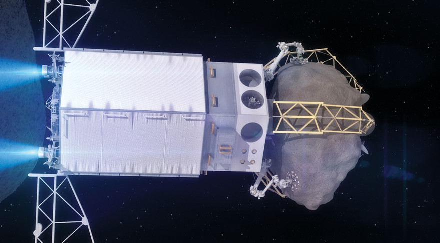
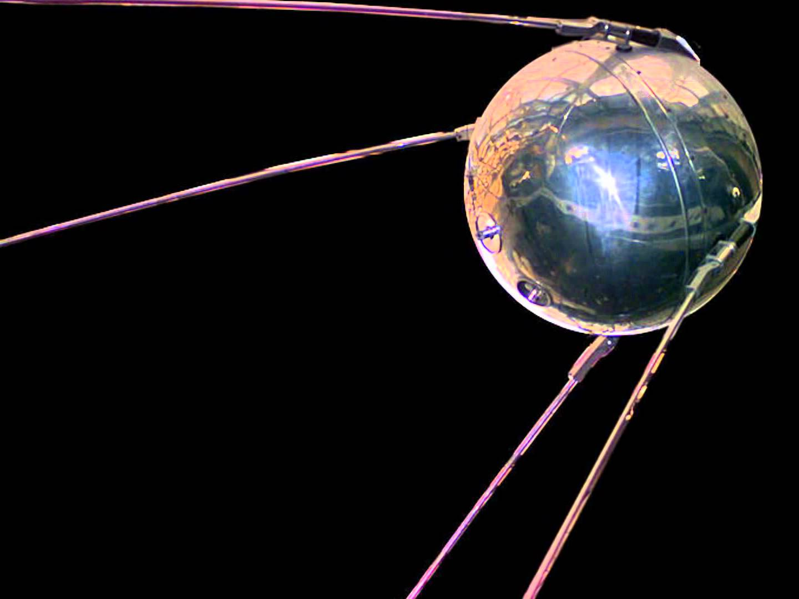
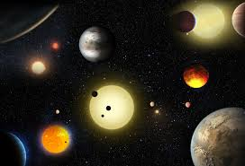

What is Genius Hour?
Genius hour is a project where students select a topic that they are interested in and dont know much about.
They make a question that they can solve that relates to this topic. They then do research to learn about this topic.
After that they make a presentation or website to show what they have learned.
Why Space
I choose this topic because I have always been fascinated by the extremeness of space.
From Pluto is a dwarf planet, to a planet that rains glass sideways at one thousand miles/hour, I loved all of it.
So when we were allowed to choose a driving question, it wasn’t hard to choose space.
I already knew a lot, but there was a lot more to learn so I got the topic.
|  |
From the first man-made machine in space, to the soon awaiting ARM (asteroid redirect mission) mission, scientists, programmers, and engineers from around the globe have been working to figure out the mysteries of space. From the fastest way to get to planets, to the BIG BANG, there is still so much we don’t know. However today I am not speculating of what could be, but what achievements we have accomplished. | |
| Because of the space race between the U.S and the Soviet Union, NASA (National Aeronautics and Space Administration) was created. NASA was one of the US’s biggest things back then. Nowadays NASA isn’t as big as it was, but is still a big part of America, with its 18.4 billion ANNUAL budget. After beating the soviets to the moon (take THAT communism), NASA's goal has been to explore the possibilities of space/flight exploration and safety. After the challenger failure, NASA has stepped up their safety game, figuring out what went wrong to fix it. NASA doesn’t just show our space capabilities, they also use satellites, which help us show when dangers might be approaching, or new habitable planets for when the inevitable finally happens. One of the biggest space collaborations is the ISS (International Space Station). This huge machine was for scientists to collect and study data from space. It started construction in November 1998, and there are still thing being added to the station. After the challenger failure, plans for the ISS construction changed a bit, as more unmanned missions were made. |   | |
|  |
More recently is the satellite New Horizons, which is currently taking pictures of Jupiter from a high orbit. We are also working on new types of thrusters, such as the ion thruster and EM Drive. These drives are slower but way more fuel efficient than the current thruster were using, the chemical thruster, which burns off lots off fuel to give it enough to get into space, then detaches its fuel tanks and glides to its destination. The chemical rocket also has no way of returning and is mostly used for satellites. If we use the new thrusters, we can hook one up on either side and go there and back, making man missions more possible. We will be using the ion thruster for the asteroid redirect mission, which is where we fly to an asteroid, pick up a multi ton bolder, and fly back. While we are in orbit with the bolder around the asteroid, we will practice some gravity redirection maneuvers, to test a theory. This can be used in case an asteroid is headed toward earth. | |
| ||